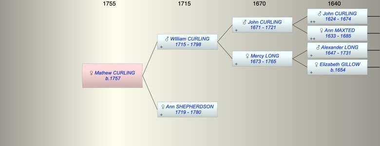

| [Index] |
| Mathew CURLING (1757 - ) |
|  |
| b. 1757 at St Laurence |
| Parents: |
| WIlliam CURLING (1715 - 1798) |
| Ann SHEPHERDSON (1719 - 1780) |
| Events in Mathew CURLING (1757 - )'s life | |||||
| Date | Age | Event | Place | Notes | Src |
| 1757 | Mathew CURLING was born | St Laurence | Note 1 | ||
| 01 Jul 1780 | 23 | Death of mother Ann SHEPHERDSON (aged 61) | St Laurence | aged 61 ex MI | |
| 24 Feb 1798 | 41 | Death of father WIlliam CURLING (aged 83) | St Laurence | Note 2 | |
| Note 1: bap St Laurence 25 Nov 1757 ex FS |
| Note 2: William CURLING died 24 Feb 1798 aged 83 (b ca 1715) his wife Ann died 1 Jun 1780 aged 61 (b ca 1719) ex St Lawrence MIs |
| Created on a Mac™ using iFamily for Mac™ on 8 Oct 2023 |